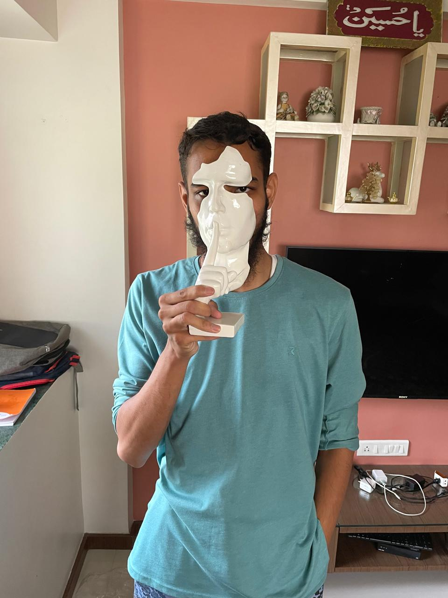

Taher Bohra

Objective Statement
Aspiring full-stack developer with a foundational background in Python, web development, and hacking. Actively learning GUI and C++ development, with practical experience in project-based work, including cybersecurity-focused applications and autonomous robotics. Known for innovative problem-solving, collaborative leadership in hackathons, and a proactive approach to skill-building. Driven by a commitment to creating impactful software solutions.
Education:
- Studied till 10th grade in UAE(OOHS), 2022.
- Completed my High School in GIS, 2024.
- Currently Pursuing B.Tech in MIT_WPU, 2024.
Skills:
- Programming Languages: Python (in-depth), C++ (beginner).
- Web Development: Basic knowledge, working towards full-stack development.
- Data Analysis: Pandas library in Python.
- GUI Development: Tkinter, Turtle graphics (project-based).
- Project Management: Leadership experience in hackathons, team collaboration.
Contact Hobbies